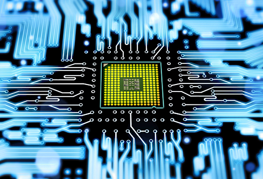

O IBM PC (Personal Computer ou "computador pessoal") foi a versão original e progenitor da plataforma de hardware dos "IBM PC compatíveis". Lançado em 12 de Agosto de 1981, o modelo original recebeu a denominação IBM 5150. Seu desenvolvimento ficou a cargo de uma equipe de doze engenheiros e projetistas sob a direção de Don Estridge da IBM Entry Systems Division em Boca Raton, Flórida.
A expressão "Personal Computer" ("Computador Pessoal") era de uso comum antes de 1981, e foi usada em 1972 para caracterizar o Alto do Xerox PARC. Todavia, devido ao sucesso do IBM PC, o que tinha sido um termo genérico passou a significar especificamente um microcomputador compatível com a especificação da IBM.
Outro evento importante desta época foi que a IBM passou a separar a criação de hardware do desenvolvimento de sistemas, iniciando a o mercado da indústria de softwares. Isto foi possível devido a utilização das linguagens de alto nível nestes computadores.
O Apple I foi o primeiro produto da Apple, exibido em abril de 1976 no Homebrew Computer Club em Palo Alto, Califórnia. Foi posto à venda em julho de 1976 ao preço de US$ 666,66, alegadamente porque Wozniak gostava de repetir números e também porque era vendido a uma loja da localidade por US$ 500, acrescentando-se 1/3 como markup. Cerca de 200 unidades foram produzidas. Diferentemente de outros computadores feitos por hobbyistas nessa época, os quais eram vendidos sob forma de kits, o Apple I era uma placa de circuito impresso totalmente montada, contendo cerca de 30 chips. Toda via, para se chegar a um computador que funcionasse, os usuários tinham de acrescentar um gabinete, fonte de energia, teclado e monitor. Uma placa de expansão opcional, contendo uma interface para cassetes, utilizados no armazenamento dos dados e programas, foi lançada posteriormente ao custo de US$ 75.
A eletrônica do terminal Apple I era peculiar. Tudo o que se precisava acrescentar era um teclado e um monitor barato. Máquinas concorrentes, como o Altair 8800 geralmente eram programados com chaves frontais e usavam luzes indicadoras (LEDs vermelhos, quase sempre) para exibir o resultado de suas operações e necessitavam de hardware adicional para poder ser conectados a um terminal ou a um teletipo. Isto fez do Apple I uma máquina inovadora para sua época.
Com o prosseguimento do projeto de miniaturização surgiram os Circuitos Integrados LSI (Circuitos de Larga Escala), com mil transistores por chip e os VLSI Technology (circuitos de larguíssima escala), com 100 mil transistores por chip, e esses novos circuitos passaram a ser chamados de microprocessadores. Os computadores diminuíram de tamanho com o uso desses chips e passaram a ser chamados de microcomputadores. O aumento da velocidade nos processadores possibilitou a execução de um número cada vez maior de tarefas ao mesmo tempo. A memória endereçada também cresceu, chegando a 64KB.
Até a terceira geração de computadores o tempo de resposta das máquinas era medido em ciclos, ou seja, o número de ações em curtos períodos de tempo para ver a fração de segundo utilizada por cada. Com a velocidade dos microprocessadores isso não era viável. Por isso surgiram as medições por clock, que calcula o número de ciclos que podem ser realizados por segundo. [1] Nesta geração, o número de clock dos microcomputadores chegava a até 4MHz. Porém, um dos principais avanços dessa época foi o surgimento da teleinformática, caracterizada pela transmissão de dados entre computadores por meio de uma rede.
De 1969 a 1972 foi criada a Arpanet, que deu inicio a Internet (teleinformática) que conhecemos hoje. A rede entrou no ar em dezembro de 1969, inicialmente com apenas 4 nós (sediados em Stanford Research Institute, na Universidade da Califórnia, na Universidade de Santa Barbara e na Universidade de Utah, todos nos Estados Unidos). Eles eram interligados através de links de 50 kbps, criados usando linhas telefônicas dedicadas, adaptadas para o uso de transmissão de dados.
Em 1971, ocorre a transmissão do primeiro e-mail, realizada pela Universidade da Califórnia para um computador na Stanford Research Institute com o texto “LOGIN”, mas chegou apenas "LO".
A Ethernet surgiu entre 1972 e 1973, dentro do PARC (o laboratório de desenvolvimento da Xerox, em Palo Alto, Estados Unidos), onde foi feito o primeiro teste de transmissão de dados usando esse padrão. Em 1974 surgiu o TCP/IP, que acabou se tornando o protocolo definitivo para uso na ARPANET e mais tarde na Internet.
Em 1971, surgiu o Sistema/370 da IBM, primeiro computador com a memória central inteiramente constituída por tecnologia monolítica (condensamento de muitos circuitos em pequeníssimos chips de silício), que, devido a grande integração e densidade de memória, melhorou consideravelmente a velocidade, capacidade e eficiência.
Logo em 1973 foi criado o Xerox Alto, desenvolvido pelo Xerox Parc, um microcomputador que utilizava uma interface gráfica de usuário e o primeiro 'desktop' pessoal.
om o avanço da tecnologia e com o uso dos microcomputadores, os preços dos computadores caíram e muitas pessoas começaram a ter acesso a eles. Mas a interface para o usuário precisava ser menos complexa, por isso começaram a surgir os sistemas operacionais.
Os primeiro Sistemas Operacionais foram os Monousuários e monotarefa, criados para que o usuário pudesse executar uma única tarefa por vez. Estes sistemas se caracterizam por permitir que os recursos da máquina (processador,memória e periféricos) fiquem alocados exclusivamente para uma tarefa. O MS-DOS, sistema operacional para computadores baseados no IBM PC, e o Palm OS dos computadores Palm são exemplos de sistemas Monousuário e monotarefa.
Mais para frente surgiram os Monousuários e multitarefas, criados para que o usuário pudesse executar várias tarefas(programas) ao mesmo tempo. O Microsoft Windows e o AppleMacOS são exemplos de Sistemas Operacionais multitarefa. Por último vieram os sistemas Multiusuários, que permitem que vários usuários utilizem simultaneamente os recursos do computador. São exemplos desse sistema o Unix, Linux e Windows NT. O MS-DOS da Microsoft e o UNIX foram sistemas operacionais que tiveram um amplo uso nos computadores pessoais. Depois o surgiu o Windows que a princípio era mais uma shell do que um S.O., mas então surgiu o Windows95, que substituiu de vez o uso do MS-DOS. Em 1972 surge a primeira versão do C, criada por Dennis Ritchie nos laboratórios Bell para ser incluído nos softwares a serem distribuídos juntamente com o sistema operacional Unix do computador PDP-11, na equipe certificada por Ken Thompson. Por muitos anos, a sintaxe utilizada como padrão da linguagem C foi a fornecida com o UNIX versão 5.0 do Bell Labs.
Os computadores da quinta geração usam processadores com milhões de transistores. Nesta geração surgiram as arquiteturas de 64 bits, os processadores que utilizam tecnologias RISC e CISC, discos rígidos com capacidade superior a 600GB, pen-drives com mais de 1GB de memória e utilização de disco ótico com mais de 50GB de armazenamento.
A quinta geração está sendo marcada pela inteligência artificial e por sua conectividade. A inteligência artificial pode ser verificada em jogos e robores ao conseguir desafiar a inteligência humana. A conectividade é cada vez mais um requisito das indústrias de computadores. Hoje em dia, queremos que nossos computadores se conectem ao celular,
a televisão e a muitos outros dispositivos como geladeira e câmeras de segurança.
Estamos vivendo também a era da revolução do IOT e da indústria 4.0 o que está revolucionando a forma com que nos relacionamos com a nossa casa como também na forma do seu trabalho.